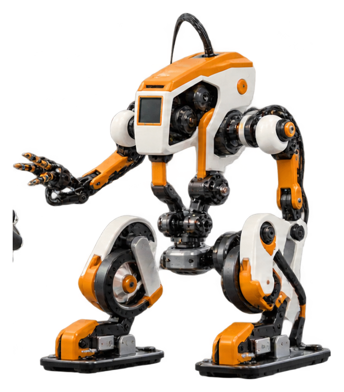

Classes 1–3
Playful introduction to patterns, structures, motion, simple machines and creative building.
INNOVOTIX / ROBOTICS & STEM
From a first moving mechanism to connected IoT projects, give students the tools and confidence to turn ideas into working creations.
 OMNIDIRECTIONAL ROBOT / 02
OMNIDIRECTIONAL ROBOT / 02
A JOURNEY THAT GROWS WITH THEM
A flexible learning pathway for schools. Topics and projects can be adapted to the students' age, available lab equipment and school timetable.
Playful introduction to patterns, structures, motion, simple machines and creative building.
Explore mechanisms, motors, sensors, circuits and block-based logic through guided challenges.
Build programmable robots, experiment with sensors and connect physical projects to code.
Develop integrated projects using electronics, IoT concepts, prototyping and introductory AI applications.
Illustrative learning progression; final syllabus is planned with each school.
TOOLS FOR BIG IDEAS
Product descriptions below are based on Innovotix's published service information.
IoT-compatible, app-controlled learning with project possibilities that connect physical builds to digital interaction.
A beginner-friendly, no-coding-required kit with guided building, safe materials and room for family participation.
Hands-on exploration of connected devices and the ideas behind sensing, monitoring and automation.
An introduction to artificial intelligence concepts and practical applications through guided activities.
A hands-on building kit using modular components to encourage creativity and structured problem-solving.
Explore capacitors, resistors, LEDs and switches while learning the fundamentals of electronic circuits.
A SPACE TO EXPERIMENT
Innovotix supports schools through a complete, school-focused approach: lab planning, kit selection, learning activities and teacher enablement.


START WITH A DEMONSTRATION